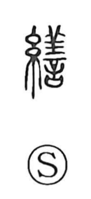

繕

Kun: tsukurou | On: zen
to mend ・ to repair
Explanation
繕 is a phono-semantic character: the thread element signals sewing and mending, and 善 supplies the sound (On reading zen). Early lexica gloss it as to supply and to mend, and the form itself points to repairing garments. Classical sources show the sense extending from clothing to equipment: the Zuo Zhuan mentions preparing armor and weapons, and the Hanshu speaks of repairing shields and pikes. From the idea of putting textile gear in order, the character developed the broader meaning of repair.